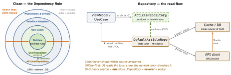
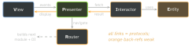

architecture · folio
In one line: Four ways to stop one object knowing too much. Coordinator — where to go next (navigation out of VCs). Repository — where data comes from (hide network/cache/DB behind one protocol). DI — who builds my collaborators (someone outside, at the composition root). Clean — which way dependencies point (always inward, towards business rules).
Download PDF Print view LaTeX source


How it works
Coordinator. Problem: VCs that push/present each other are coupled to their siblings, cannot be reused in another flow, bloat with routing, and make deep links scatter. 3 jobs: (1) build screens — VC+VM, inject deps (assembly); (2) navigate — push/present/dismiss on its presenter (UINavigationController); (3) own child flows — childCoordinators, start(), remove on finish (forget it → the flow leaks). The VC only reports intent (closure onSelect, delegate) — it is a Mediator for navigation. SwiftUI: a router owning NavigationPath/[Route] + navigationDestination(for:).
Repository. One source-agnostic API over several sources (network, cache, DB); orchestrates them with a policy (cache → API → write-back, merge, staleness); returns domain entities; is swappable behind a protocol the domain owns. Caching/offline lives here.
Dependency Injection = collaborators handed in from outside.
- Constructor (
init) — default: non-optional,let, compiler-enforced. Property — optional deps, storyboard VCs (anilwindow). Method — per-call dependency. - Default arg:
init(s: URLSession = .shared)— tests inject. - Containers: Swinject, Resolver, Factory, Needle (compile-time); scopes: transient · singleton · scoped/weak.
- SwiftUI:
.environment(\.key, v)/.environmentObject(o)— DI by context; missing ⇒ runtime crash. - Composition root: the one place near launch that wires concretes. Service locator (a container resolved inside a type) = anti-pattern: hidden deps, global state.
- IoC = idea · DIP = principle · DI = technique implementing DIP.
Remember
Coordinator = where to · Repository = where from · DI = who builds · Clean = which way. VIPER = V·I·P·E·R.
Example
protocol ArticleRepository { // owned by the DOMAIN
func articles() async throws -> [Article] }
final class DefaultArticleRepo: ArticleRepository {
let api: APIClient; let cache: ArticleCache
init(api: APIClient, cache: ArticleCache) { // ctor DI
self.api = api; self.cache = cache }
func articles() async throws -> [Article] {
if let c = cache.load(), !c.isStale { return c.items }
let fresh = try await api.fetch().map(Article.init)
cache.save(fresh); return fresh } // write back
}
// composition root: the ONLY place that picks concretes
FeedVM(repo: DefaultArticleRepo(api: LiveAPI(), cache: Disk()))VIPER, one module per screen

I = business logic (use case) · P = formatting ·
R = navigation + assembly · E = plain models. I ≈ Clean’s
Use Case, P ≈ Interface Adapter. objc.io’s original: I hands P
plain data, never Entities (so P can only format); the wireframe (R) owns the
window / UINavigationController. Ownership: V→P→I and P→R strong;
P→V, I→P, R→VC weak (protocols : AnyObject) or the module never
frees. Cost: ∼5 types + protocols per screen — only for large, multi-team apps.
Traps
- Repository is not mainly about testing: it hides multiple sources · read flow cache → API → write-back · single source of truth. Testability falls out.
- A class that just forwards
api.get()is a renamed network client, not a Repository — the value is orchestration. - Coordinator as “a class that pushes VCs” misses the point — the problem is VCs knowing each other (coupling, no reuse); the 3 jobs follow.
.sharedcalled inside a type defeats DI — inject it.- “Use case needs network so it imports URLSession” — no: it declares a protocol; the outer layer conforms and is injected.